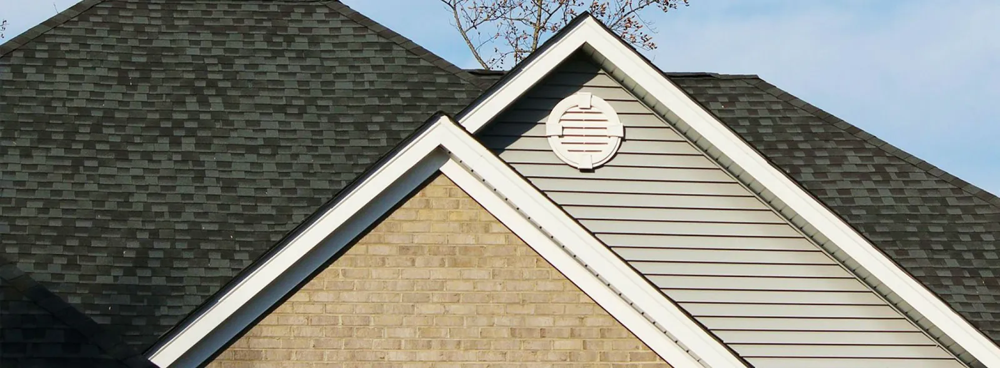

Are you wondering whether you need a new roof in Salt Lake City? If yes, you are in the right place to learn everything you need — so read on.
Homes are the biggest investment in most people’s lives. That is why they tend to spend a lot of money on furniture, decorations, and anything else that would make their place unique and special. However, blinded by the champagne-white walls and leather sofas, few pay attention to their roofs…until it’s too late.
When Should I Replace My Roof?

If you are reading this article, you have probably already seen some signs that your roof needs replacing. To help you better determine that, here are the things you should look for:
Your Roof is Over 20 Years Old
Usually, asphalt shingle roofs last between 20 and 30 years. As a rule of thumb, however, it’s a good idea to get your roof checked when it approaches its 20th birthday, so that you know how many years it’s got left.
The Shingles Are Cracked
Cracked shingles are normally a sign of wind damage, so don’t panic. If you see only a few isolated shingles that are cracked, you can just replace them. However, should you notice vast areas of your roof showing signs of damage, contact an expert. We, J & N Roofing Maintenance, have years of experience in the field and can determine whether your roof needs a repair or a total replacement. Our consultations are 100% free, so if you’re in doubt, don’t hesitate to get in touch with us; we’ll be happy to help.
The Shingles are Curling
Deformed and curling shingles are a sign of weathering. Keep an eye on your roof, and if you see vast areas that show such issues, call in a pro to see if there is anything to worry about.
Entire Shingles are Missing
That may be a result of harsh weather conditions, and normally, it’s not a huge problem. You can just replace the missing shingles. However, keep in mind that it may be hard to find replacements of the same color, especially if your roof isn’t particularly new.
Any Combination of the Previously Mentioned
If your roof is over 20 years old, you spot cracking and missing shingles, etc., that’s surely a red flag. Consider opting for a free estimate so that you know if it’s time for a new roof.
Best Season to Get a New Roof in Salt Lake City
If you are looking to get a new roof in Salt Lake City, the beginning of the summer is probably the best period to proceed. Temperatures are neither too cold nor too hot, which is a must when installing a roof.
Of course, in emergency situations, we can replace your roof during any season, but if you have the luxury, we recommend waiting for the periods of warm, dry weather.
Again, you can discuss the optimal time for your roof replacement with our team of professionals.
To Sum Up
The roof is one of the most important parts of your home. It keeps it safe from the weather, provides active insulation, and ensures you don’t get flooded after the first rain… That is why you should take good care of it so that it serves you well.
We hope the information regarding a new roof in Salt Lake City was helpful and answered some of your questions.
Other Roofing Topics to Education Yourself With
Affordable Roofing Company Near By
Get Your Free Roof Inspection Today
Learn About the Benefits of Shingles for Your Home